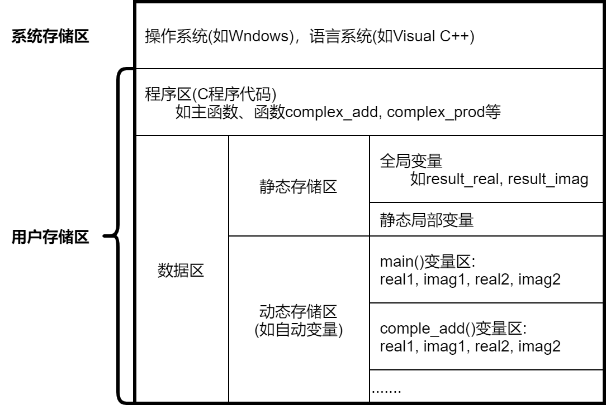

程序设计基础 · 第5次课 · 第3课时
从社区慢病随访记录编号到内存存储区模型，理解“局部变量、全局变量、static 静态变量与隐藏状态陷阱”
多个函数协同处理数据时，变量应该放在哪里？能被谁看见？能保留多久？
已掌握自定义函数的定义、传参、返回值与 void 模块化分工架构。
慢病管理系统需要为多次随访分配连续编号、计算居民历次随访动态累计平均指标，还要在模块间共享全局配置。
作用域（空间可见范围）与存储期（时间存活周期），以及背后的内存三区分工。
static 静态局部变量的声明与行为特征static 变量在多次调用中的演变static 带来的“调用顺序依赖”int count = 100; /* Global variable: file scope */
void sample(void)
{
int count = 0; /* Local variable: block scope */
printf("%d ", ++count);
}
int main(void)
{
sample();
printf("%d\n", count);
return 0;
}预测输出：打印 1 100 还是 1 1？
| 核心维度 | 要回答的问题 | 主要分类 | 决定因素 |
|---|---|---|---|
| 作用域 (Scope) |
空间概念：哪段代码、哪个函数能够访问该变量的名字？ | • 块作用域（局部）：花括号 {} 内• 文件作用域（全局）：函数外定义 |
变量声明所在的代码物理位置 |
| 存储期 (Lifetime) |
时间概念：该变量占用的内存单元何时创建、何时释放？ | • 自动存储期：进入块分配，退出块释放 • 静态存储期：程序启动分配，退出释放 |
变量的存储类型修饰符（如 static） |
static 局部变量就是典型的反例！
static 变量0
💡 课堂互动：学生先不借助 AI，自己在草稿纸上圈出不同花括号对应的变量存活范围，再与 AI 的推演进行对齐验证。
static 局部变量：兼具局部安全的作用域与全程持久的静态存储期。void show(void)
{
int count = 0;
count++;
printf("%d ", count);
}
show(); show(); show();1 1 1void show(void)
{
static int count = 0;
count++;
printf("%d ", count);
}
show(); show(); show();1 2 3int recordId(void)
{
static int next = 0; /* In static storage, initialized once */
next++;
return next;
}
int main(void)
{
printf("Record ID: #%d\n", recordId()); /* Output #1 */
printf("Record ID: #%d\n", recordId()); /* Output #2 */
printf("Record ID: #%d\n", recordId()); /* Output #3 */
return 0;
}next 只能在 recordId 内部访问，外部任何函数都无法擅自篡改编号。
如果新慢病居民建档要求重新从 #1 开始编号，函数接口无法从外部复位清零。
double runningAverage(double bmi)
{
static double sum = 0.0;
static int n = 0;
if (bmi <= 0) return -1.0; /* Guard clause: avoid polluting history */
sum += bmi;
n++;
return sum / n;
}
/* Simulate 3 follow-up measurements for one resident */
printf("%.2f\n", runningAverage(24.0)); /* 24.0 / 1 = 24.00 */
printf("%.2f\n", runningAverage(23.6)); /* 47.6 / 2 = 23.80 */
printf("%.2f\n", runningAverage(23.8)); /* 71.4 / 3 = 23.80 */bmi，实际计算却暗中依赖了过去所有历史随访数据！同一个输入，函数一定返回相同结果吗？在有 static 的世界里并非如此！
| 测试场景 | 调用序列 | 每次返回的结果 | 为什么会这样？ |
|---|---|---|---|
| 场景 1：完整历史 | 24.0 → 23.6 → 23.8 |
24.00 → 23.80 → 23.80 |
累加了 3 个随访测量值 |
| 场景 2：新居民直接测 | 直接调用 23.8 |
23.80 |
只累加了 1 个值（\(23.8 / 1 = 23.8\)） |
| 场景 3：未重启重复测试 | 再次传入 24.0 |
23.85（因为 \(95.4 / 4 = 23.85\)） |
上一位居民的历史残留污染了新居民！ |
💡 课堂互动：同桌讨论：为什么工业界现代代码规范提倡“尽量显式传递状态，慎用不可控的持久局部状态”。
double cash = 0.0; /* Global balance variable */
void income(double amount)
{
cash += amount;
}
void expend(double amount)
{
cash -= amount;
}double 变量时错写成 scanf("%f", &value)，必须纠正为 %lf！
便利之处：
income 与 expend 都不需要通过指针或复杂结构传参，直接读写公共余额 cash。
致命风险：
如果系统中扩展出 50 个函数，只要任何一个实习生不小心写了 cash = 0;，整个账户余额瞬间蒸发，几乎无法追踪是哪一行代码下的黑手！
balance = income(balance, 100.0);
balance = expend(balance, 30.0);✓ 输入什么、输出什么一清二楚；函数无副作用，极其易测。
income(100.0); /* Modifies global cash silently */
expend(30.0);✗ 模块间产生看不见的“强耦合纽带”，牵一发而动全身。
const 修饰！
💡 课堂互动：观察 AI 如何解释“全局变量导致的多线程数据竞态（Race Condition）”与“隐蔽副作用”，加深对局部封装的敬畏。
static 阶乘函数的致命假象。使用全局变量在 main 与自定义函数之间共享数据，计算两个复数的和与积。输入两复数的实部与虚部，输出它们的和与积。
\((a + bi) + (c + di) = (a + c) + (b + d)i\)
result_real = real1 + real2;
result_imag = imag1 + imag2;\((a + bi)(c + di) = (ac - bd) + (ad + bc)i\)
因为 \(i^2 = -1\)，所以实部必须减去两虚部乘积！
/* Buggy formula: mixed real and imaginary parts */
result_real = real2 * imag1 - real1 * imag2;测试打假：对于 \((1 + 2i) \times (3 + 4i)\)：
正确实部为 \(1 \times 3 - 2 \times 4 = -5\)。
原课件错码算出的实部却是 \(3 \times 2 - 1 \times 4 = 2\)，差了十万八千里！
/* Correct math formula: (a+bi)(c+di) = (ac-bd) + (ad+bc)i */
result_real = real1 * real2 - imag1 * imag2;
result_imag = real1 * imag2 + imag1 * real2;教训：全局变量名字长且相似，极易在编码时手滑敲错变量名而浑然不知！
输出 1 到 \(n\) 的阶乘表。要求定义和调用函数 fact_s(n) 计算 \(n!\)，其内部利用静态局部变量保留上一次计算的结果。
double fact_s(int n)
{
static double f = 1.0;
f = f * n;
return f;
}| 调用序列 | 实际返回值序列 | 真正的阶乘 \(n!\) | 诊断结论 |
|---|---|---|---|
按严格顺序调用fact_s(1) → (2) → (3) |
1.0 → 2.0 → 6.0 |
1 → 2 → 6 |
表面巧合匹配（每步恰好乘上了 \(n\)） |
| 新程序直接算 3! 只调用 fact_s(3) |
3.0 |
6 |
彻底算错！（\(1.0 \times 3 = 3\)） |
同一个程序中算两次 3!fact_s(3) → fact_s(3) |
3.0 → 9.0 |
6 → 6 |
不可复现！（第二次直接乘上去了） |
fact_s(n) 根本不是求 \(n!\)，它仅仅是“把传入的数乘到内部静态累乘器上”。一旦调用次序颠倒，满盘皆输！
💡 课堂互动：学生体会黑盒测试的威力——用事实说话，用最小测试用例推翻伪逻辑。
| 声明语句 | 作用域 | 存储期与跨调用保留 |
|---|---|---|
int a = 0;（函数内） | 函数/块内部 | 自动存储期，不保留 |
static int b = 0;（函数内） | 函数/块内部 | 静态存储期，跨调用保留 |
int c = 0;（函数外） | 整个文件向后可见 | 静态存储期，全程保留 |
追问：静态局部变量 b 属于全局变量吗？绝不是！它的作用域仅限函数内部！
如何用最简单的两行代码证明 fact_s(n) 不是通用阶乘？
/* Test: call directly with n = 3 */
double ans = fact_s(3);
printf("%f\n", ans); /* Prints 3.0 instead of 6.0! */| 设计维度 | 优秀实践（Best Practice） | 反面教材（Bad Smell） |
|---|---|---|
| 接口设计 | 输入输出明明白白，按值传递各司其职 | 依靠全局变量暗渡陈仓，形参列表形同虚设 |
| 职责分配 | 单一职责，计算不掺杂打印，高内聚低耦合 | 一个 300 行函数从输入到计算、打印一手包办 |
| 状态管理 | 状态显式传递，函数可独立单测、结果可复现 | 滥用 static 隐藏累加状态，调用顺序稍变即崩溃 |
fact_s 重构为不带任何隐藏静态变量的独立通用阶乘函数reset() 重置接口的测试安全的编号生成器
如果我们的社区慢病管理系统不仅记录 1 次随访，而是要保存全社区 100 名慢病居民的一整年随访数据并排序：
难道我们要声明 bmi1, bmi2, ... bmi100 吗？
下周见——第六章：数组（批量同类数据的内存管理）！
接口清晰，状态可测；函数有界，程序常青。